实验环境
宿主机:Ubuntu 14.04 x64,配置了Android SDK,NDK环境
虚拟机:Windows XP SP3,安装有IDA Pro 6.8
实体手机:华为U882525D Android 4.04
WiFi ADB以及用到的工具AliCTF.apk都可以从http://pan.baidu.com/s/1eR0KE8y下载.
0x01:手机处理
1.获取root权限
可以手动刷,也可以使用刷机精灵即可,推荐使用后者了,毕竟我们不打算玩刷机.
2.打开USB调试
依次[设置->开发人员选项],设置如下:
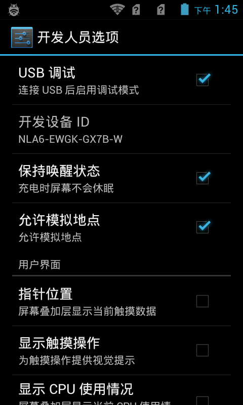
3.设置WiFi ADB
安装WiFi ADB,安装之后,打开WiFi,打开WiFi ADB,界面如下,在shell中输入adb connect 192.168.1.4:5555即可连接:
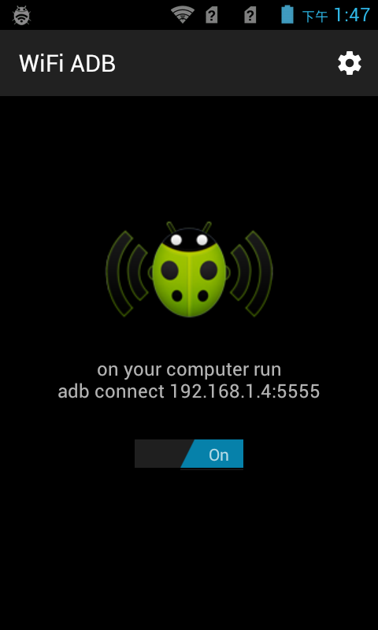
0x02:连接IDA Pro与Android手机
1.启动IDA Android远程服务器
进入IDA Pro的dbgsrv目录下,如下:
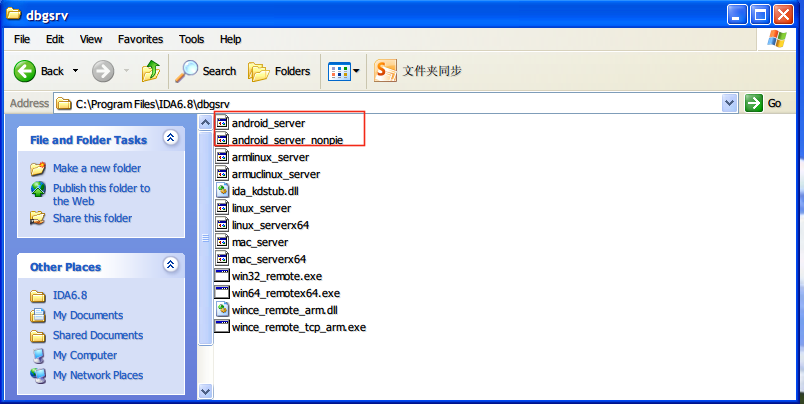
注意IDA Pro6.8的dbgsrv还有的Android服务器端包括android_server以及android_server_nonpie.
自从Android4.1之后,Android系统已经完全支持ASRL技术,这些技术包括了栈,堆,可执行程序等的地址空间分配随机化(具体可以看这里:).
PIE( Position Independent Executable )是指让可执行程序分配的空间地址随机化.是否使用了PIE编译可以简单的通过file来鉴别,如下:
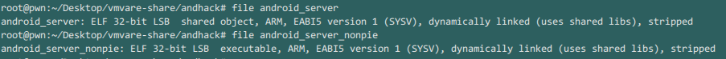
注意其中的 shared object便指明使用了PIE技术编译.由于使用的真机系统为Android 4.04,尚部支持PIE编译的程序.
因此应该使用nonpie版本的android_server.稍后我也将展示在非PIE编译的Android系统上运行PIE编译的android_server将会出现何种错误.
我将android_server和android_server_nonpie拷贝到宿主的工作目录,然后上传到/data/local/tmp目录下面.
执行命令为:adb push android_server /data/local/tmp以及adb push android_server_nonpie /data/local/tmp,如下:
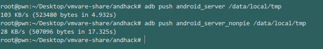
然后adb shell进入Android系统,使用su获取root权限,然后进入/data/local/tmp目录,首先应确定Android服务器具有可执行权限,如下:
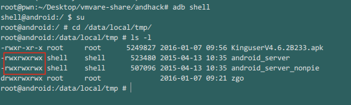
现在我们分别运行PIE编译的android_server和非PIE编译的android_server_nonpie,如下:
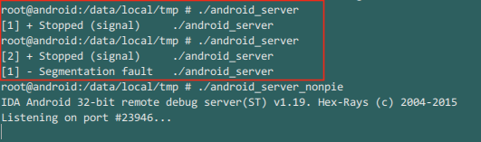
可以清楚的看到当PIE编译的Android服务器在不支持PIE的Android系统上,将会出现Segmentation fault错误.因此应该运行android_server_nonpie.
2.端口转发
现在我们的Android远程服务器已经运行起来了,监听端口是23946.接下来进行端口转发.在Google的开发文档
提到了端口转发如下:
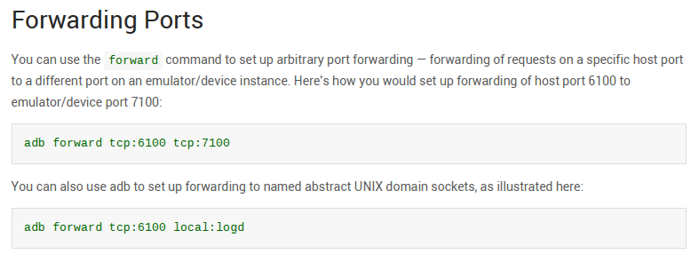
我们这里使用的是第一种adb forward tcp:host-port tcp:device-port,其作用是将宿主机的端口host-port转发到设备或者模拟器的端口device-port.
我用Dia简单的画了个示意图(看起来不太优雅...)如下:
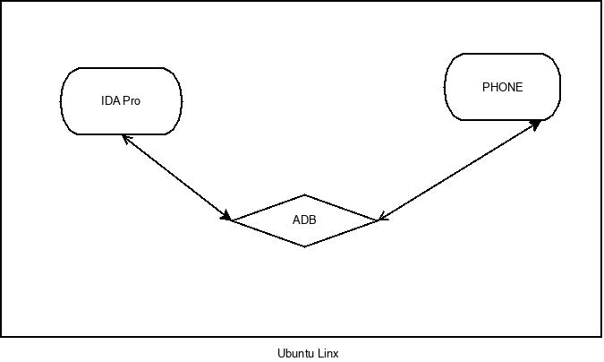
一般情况下,IDA Pro,设备PHONE以及Android环境(以ADB表示)一同安装在宿主机上(Ubuntu Linux)面,IDA的Android远程服务器运行在PHONE上面,
IDA Pro无法直接和PHONE上的服务器进行通信,需要通过安装在宿主机上的ADB进行端口转发.
我们已经知道IDA Pro的Android服务器监听的端口是23946,因此IDA Pro发起的访问端口也是23946.实现端口转发的命令如下:
adb forward tcp:23946 tcp:23946
但是在我的Android分析环境中,IDA是安装在虚拟机VMware中的,如下:
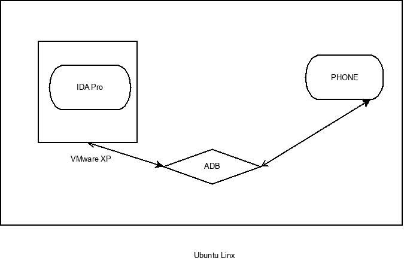
那么仅仅通过上述端口转发还不够,还需使用一次TCP流重定向.我使用的工具是redir,Ubuntu的安装方式apt-get install redir.
通过ifconfig查看本机的ip地址,在我此时的机器上获知为192.168.1.102,则TCP流重定向命令如下:
redir --lport=23946 --laddr=192.168.1.102 --cport=23946 --caddr=localhost
这个命令将使宿主机(宿主机IP即为192.168.1.102)监听来自23496端口的连接请求(即来自虚拟机XP的TCP流),然后重定向到宿主机的lo网卡(环路网卡).
我们可以使用netstat -lapute | grep 23946命令来查看转发结果,如下:
tcp 0 0 localhost:23946 *:* LISTEN root 63772826 10212/adb
tcp 0 0 pwn.lan:23946 *:* LISTEN root 63761390 17237/redir
截图如下:
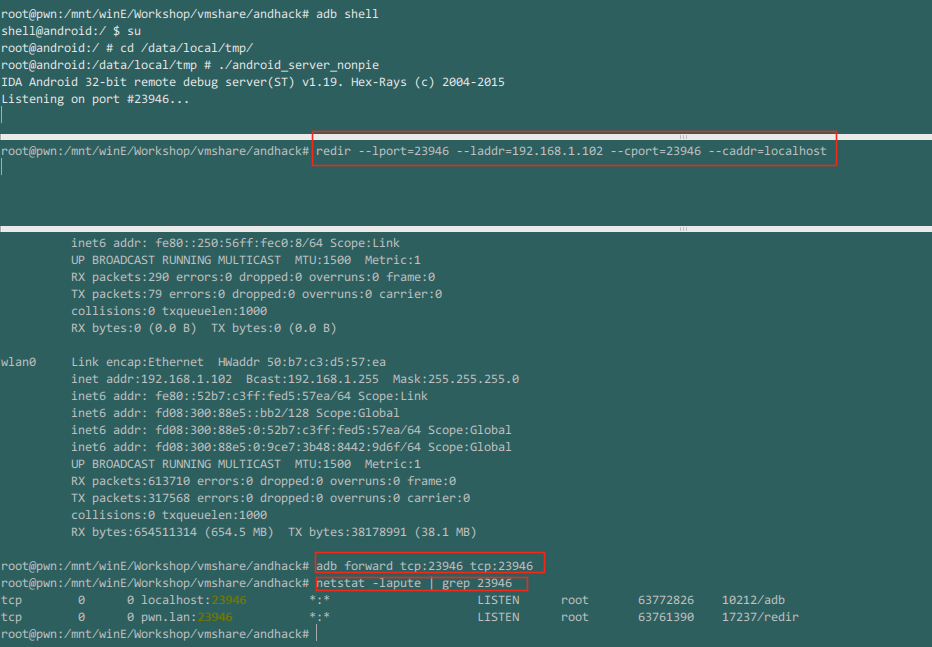
0x03:开始调试
1.确定启动Activity
以阿里CTF的某届比赛中的一个APK为例,将其命名为AliCTF.apk(你可以从这里下载),然后安装到手机上如下:
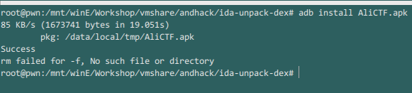
然后接下来需要启动程序,那么启动那个Activity呢?我们需要先反编译一下APK,通过查看AndroidManifest.xml来决定.
使用的工具为apktool,安装方式就不说了,直接反编译并查看AndroidManifest.xml文件如下:
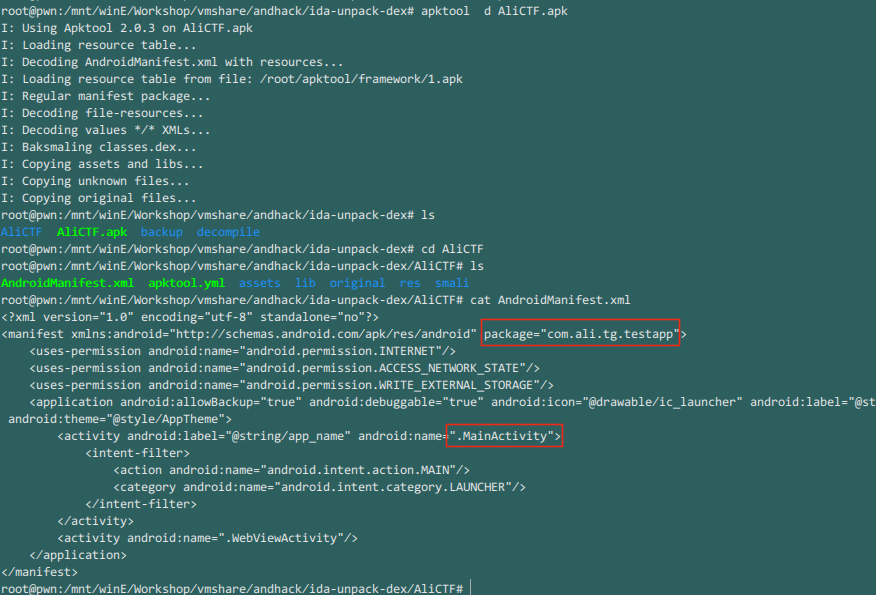
因此我们要启动的Activity为com.ali.tg.testapp.MainActivity,包为com.ali.tg.testapp,使用adb shell进入android,启动命令如下,其中-D指定为调试(Debug)模式:
am start -D -n com.ali.tg.testapp/com.ali.tg.testapp.MainActivity
正确启动后应如下图所示:
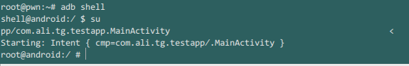
此时手机屏幕显示如下:
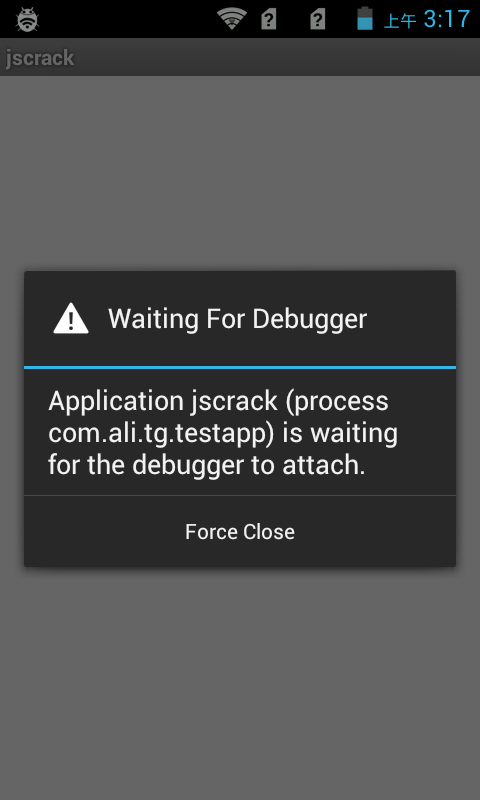
2.IDA 依附目标进程
进入IDA,Debugger->Attach->Remote ARMLinux/Android debugger:
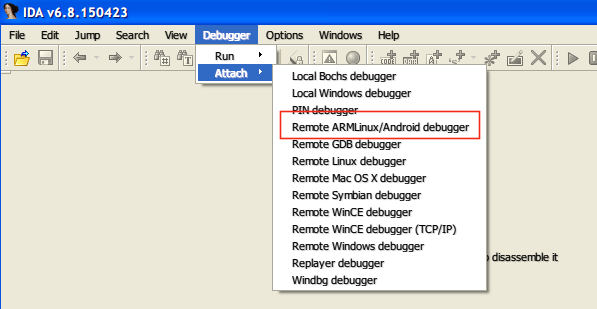
在Debug application setup界面中设置Debug Options以及Hostname,Hostname为你主机的IP地址(在这里为宿主机Ubuntu Linux的IP地址),如下图所示:
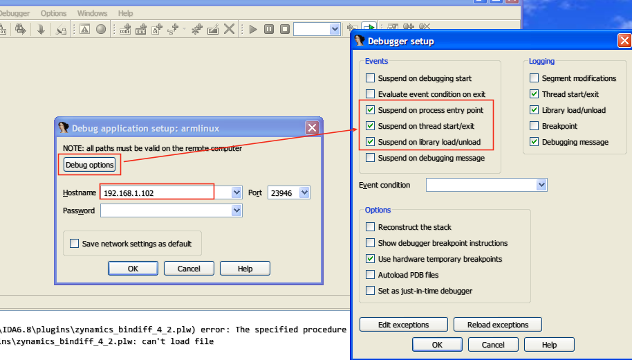
然后会弹出Choose Process to attach to界面,选择对应进程,并记下PID,如下图:

可以看到PID为4302.点击OK后,稍等片刻进入如下界面:
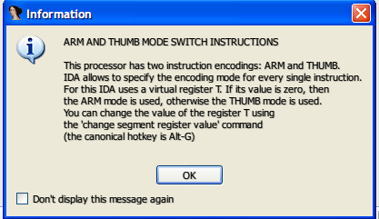
直接点击OK即可.稍等片刻执行如下操作打开模块列表,如下:
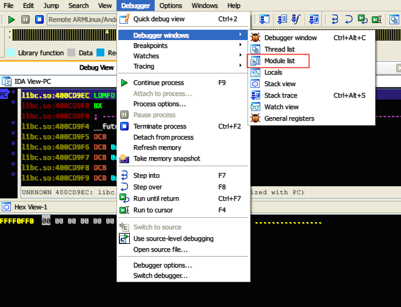
然后转到Modules栏,Ctrl+F输入libdvm.so文件:
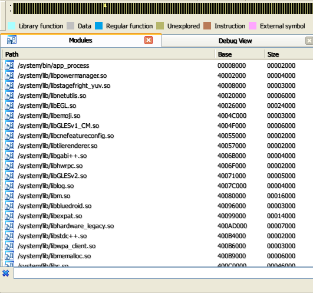
搜索得到如下:
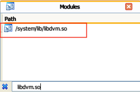
双击进入,同样的方法查找dvmDexFileOpenPartial函数,并按F2下断点如下:
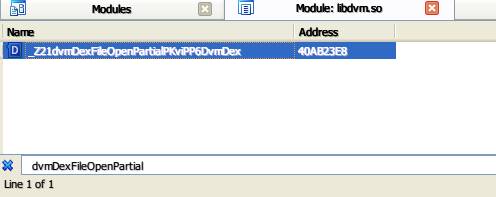
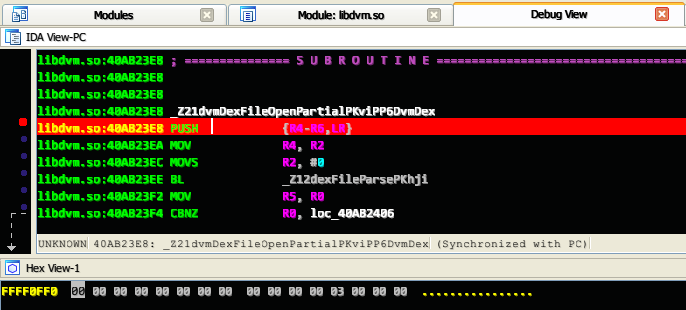
然后开启JDB调试,同样的原理,我们需要进行转发,执行三条命令如下,其中7788为自定义的一个端口,4302为你在IDA中看到的PID(这个时候手机屏幕上仍是在等待调试状态),
192.168.1.102为你宿主机的IP地址:
adb forward tcp:7788 jdwp:4302
redir --lport=7788 --laddr=192.168.1.102 --cport=4302 --caddr=localhost
jdb -connect com.sun.jdi.SocketAttach:port=7788,hostname=localhost
回到IDA界面,F9运行,然后IDA会弹出Add map对话框,此时上述三条指令的执行情况如下(其中redir和jdb都处于等待状态):
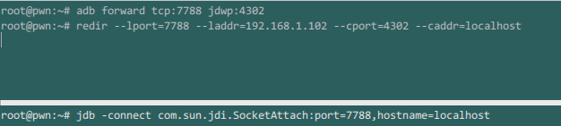
弹出的Add map界面如下
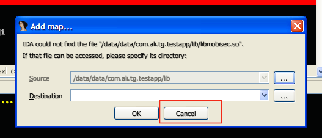
点击取消(cancel)弹出下图:
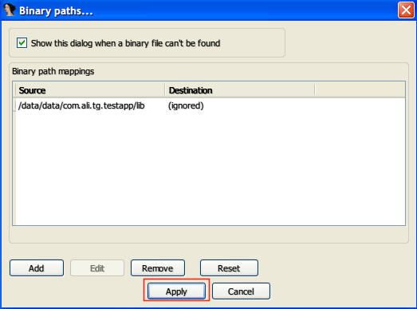
点击应用(apply)即可.随后IDA将会在断点处断下(此时手机屏幕上的wating for debugger界面会消失)如下:
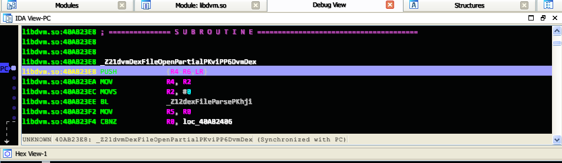
而且jdb也有了输出,如下:
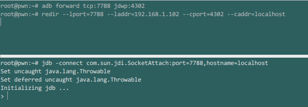
0x04:Dump Dex
依次File ->Script command...
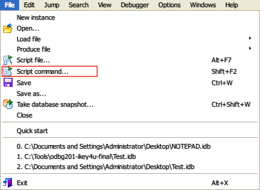
在弹出的界面中输入如下脚本:
auto fp, dex_addr,end_addr;
fp =fopen("C:\\dump.dex","wb");
end_addr =r0 +r1;
for (dex_addr =r0; dex_addr < end_addr; dex_addr++) fputc(Byte(dex_addr),fp);
如下:
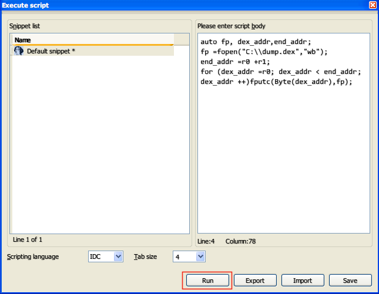
点击run,稍后将会在C:\下面出现dump.dex.至此全部完成.
0x05:接下来干什么?
在后续文章中将会研究如下几个问题:
- 为什么是在函数dvmDexFileOpenPartial处下断点?
- Dex该如何反编译分析?
- .so文件该如何打补丁并回编译?
- 介绍基本的android系统命令,如am,pm,screencap等等
- 流量转发与端口转发的原理